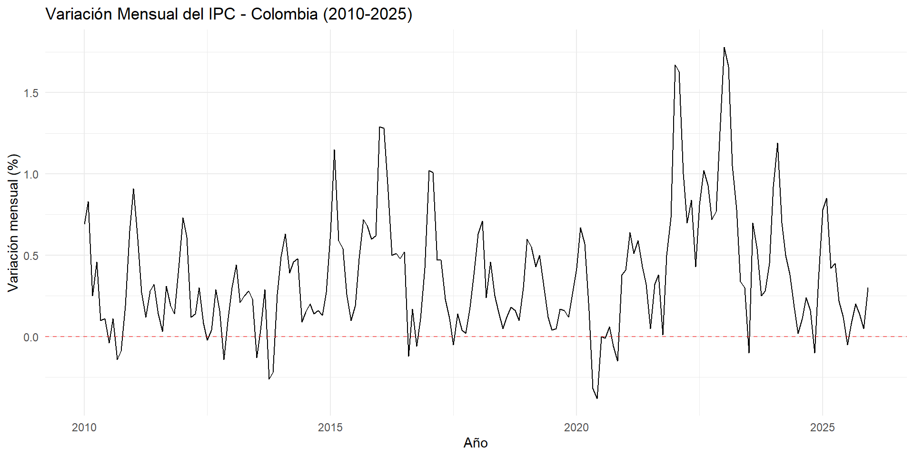
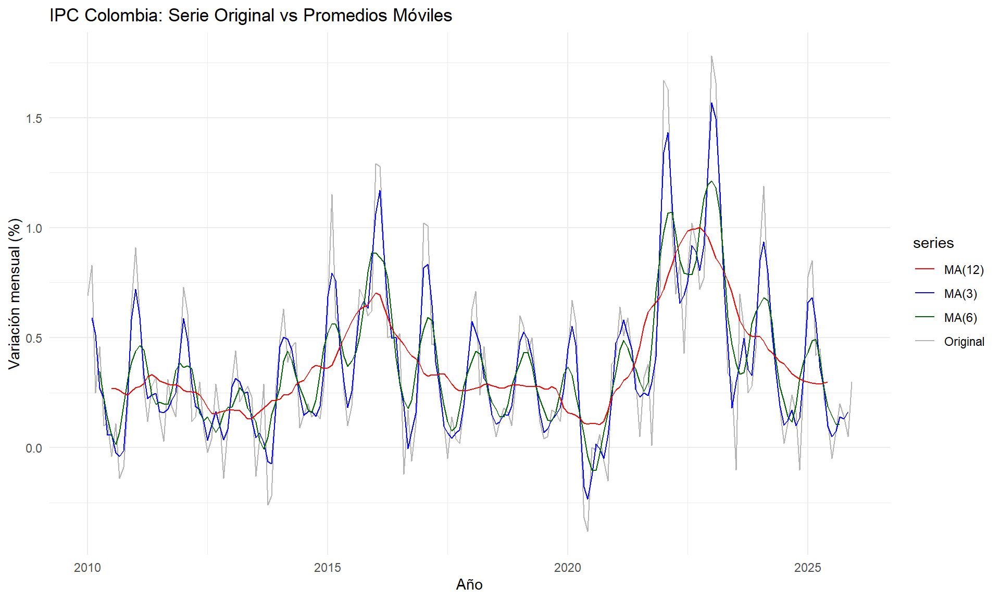
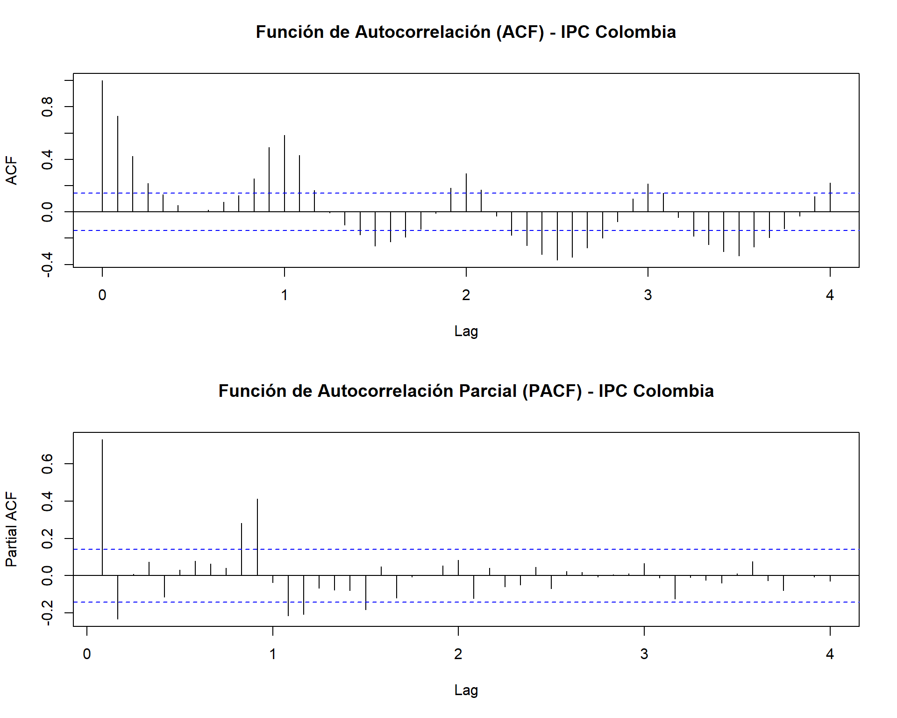
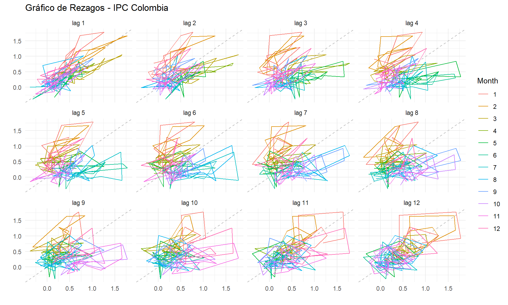
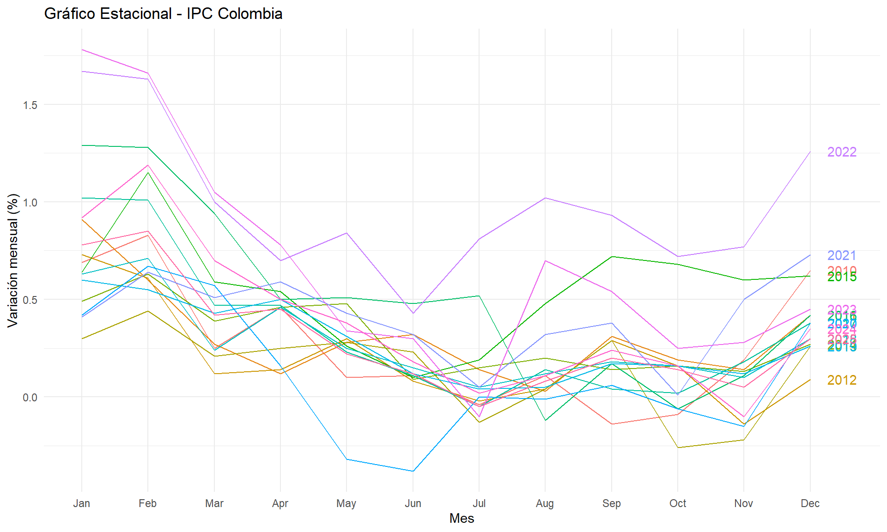
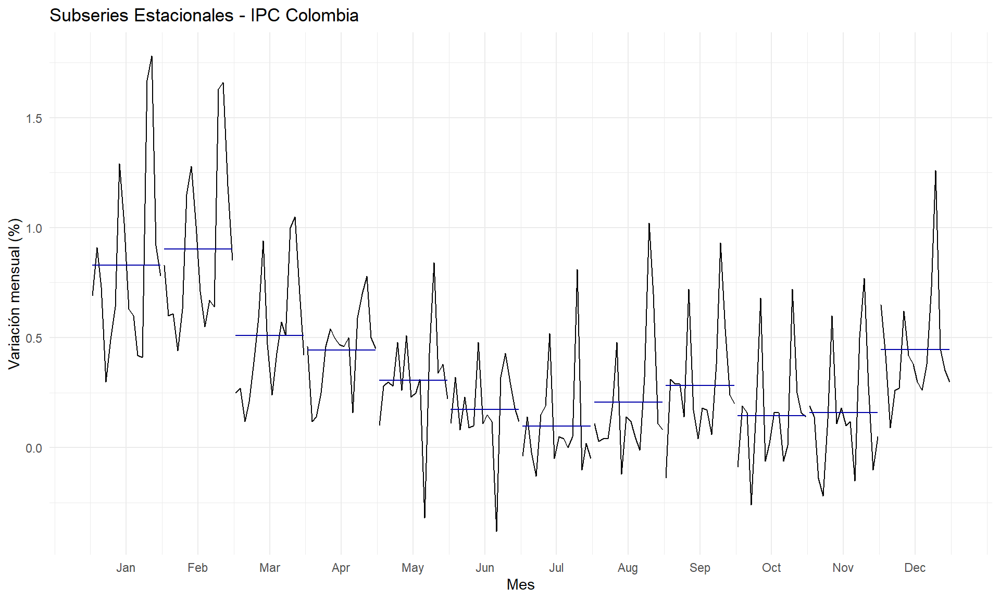

Capítulo 1 Exploración y Patrones de la Serie
1.1 Carga de librerías y datos
library(readr)
library(dplyr)
library(ggplot2)
library(forecast)
library(zoo)
library(lubridate)
library(tseries)Para este análisis, se construyó un conjunto de datos con la variación mensual del IPC total nacional de Colombia, desde enero de 2010 hasta diciembre de 2025. Los datos fueron recopilados del DANE.
# Datos del IPC - Variación mensual (%) Colombia
# Fuente: DANE - Índice de Precios al Consumidor
ipc_data <- data.frame(
fecha = seq(as.Date("2010-01-01"), as.Date("2025-12-01"), by = "month"),
variacion = c(
# 2010
0.69, 0.83, 0.25, 0.46, 0.10, 0.11, -0.04, 0.11, -0.14, -0.09, 0.19, 0.65,
# 2011
0.91, 0.60, 0.27, 0.12, 0.28, 0.32, 0.14, 0.03, 0.31, 0.19, 0.14, 0.42,
# 2012
0.73, 0.61, 0.12, 0.14, 0.30, 0.08, -0.02, 0.04, 0.29, 0.16, -0.14, 0.09,
# 2013
0.30, 0.44, 0.21, 0.25, 0.28, 0.23, -0.13, 0.04, 0.29, -0.26, -0.22, 0.26,
# 2014
0.49, 0.63, 0.39, 0.46, 0.48, 0.09, 0.15, 0.20, 0.14, 0.16, 0.13, 0.27,
# 2015
0.64, 1.15, 0.59, 0.54, 0.26, 0.10, 0.19, 0.48, 0.72, 0.68, 0.60, 0.62,
# 2016
1.29, 1.28, 0.94, 0.50, 0.51, 0.48, 0.52, -0.12, 0.17, -0.06, 0.11, 0.42,
# 2017
1.02, 1.01, 0.47, 0.47, 0.23, 0.11, -0.05, 0.14, 0.04, 0.02, 0.18, 0.38,
# 2018
0.63, 0.71, 0.24, 0.46, 0.25, 0.15, 0.05, 0.12, 0.18, 0.16, 0.10, 0.30,
# 2019
0.60, 0.55, 0.43, 0.50, 0.31, 0.12, 0.04, 0.05, 0.17, 0.16, 0.12, 0.26,
# 2020
0.42, 0.67, 0.57, 0.16, -0.32, -0.38, 0.00, -0.01, 0.06, -0.06, -0.15, 0.38,
# 2021
0.41, 0.64, 0.51, 0.59, 0.43, 0.32, 0.05, 0.32, 0.38, 0.01, 0.50, 0.73,
# 2022
1.67, 1.63, 1.00, 0.70, 0.84, 0.43, 0.81, 1.02, 0.93, 0.72, 0.77, 1.26,
# 2023
1.78, 1.66, 1.05, 0.78, 0.34, 0.30, -0.10, 0.70, 0.54, 0.25, 0.28, 0.45,
# 2024
0.92, 1.19, 0.70, 0.50, 0.38, 0.18, 0.02, 0.11, 0.24, 0.16, -0.10, 0.35,
# 2025
0.78, 0.85, 0.42, 0.45, 0.22, 0.12, -0.05, 0.08, 0.20, 0.14, 0.05, 0.30
)
)
# Verificar estructura
str(ipc_data)## 'data.frame': 192 obs. of 2 variables:
## $ fecha : Date, format: "2010-01-01" "2010-02-01" ...
## $ variacion: num 0.69 0.83 0.25 0.46 0.1 0.11 -0.04 0.11 -0.14 -0.09 ...## fecha variacion
## 1 2010-01-01 0.69
## 2 2010-02-01 0.83
## 3 2010-03-01 0.25
## 4 2010-04-01 0.46
## 5 2010-05-01 0.10
## 6 2010-06-01 0.11
## 7 2010-07-01 -0.04
## 8 2010-08-01 0.11
## 9 2010-09-01 -0.14
## 10 2010-10-01 -0.09
## 11 2010-11-01 0.19
## 12 2010-12-01 0.651.2 Conversión a objeto de serie de tiempo
Convertimos los datos a un objeto ts con frecuencia mensual (12 observaciones por año):
## [1] "ts"## [1] 121.3 Visualización inicial de la serie
autoplot(ipc_ts) +
ggtitle("Variación Mensual del IPC - Colombia (2010-2025)") +
xlab("Año") +
ylab("Variación mensual (%)") +
theme_minimal() +
geom_hline(yintercept = 0, linetype = "dashed", color = "red", alpha = 0.5)
En la gráfica se observan varios elementos relevantes:
- Una estacionalidad marcada: enero suele registrar las variaciones más altas del año, mientras que meses como julio y septiembre tienden a tener variaciones bajas o incluso negativas.
- Un período de baja inflación entre 2017 y 2019.
- Un choque deflacionario durante 2020 asociado a la pandemia COVID-19, con variaciones negativas en mayo y junio.
- Un choque inflacionario severo entre 2022 y 2023, con variaciones mensuales que superaron el 1.5%.
1.4 Estadísticas descriptivas
## Min. 1st Qu. Median Mean 3rd Qu. Max.
## -0.3800 0.1200 0.2950 0.3754 0.5750 1.7800## Desviación estándar: 0.3749944## Número de observaciones: 1921.5 Promedio Móvil
El promedio móvil permite suavizar la serie eliminando fluctuaciones de corto plazo y revelando la tendencia subyacente. Utilizamos ventanas de 3, 6 y 12 meses:
# Calcular promedios móviles
ipc_ma3 <- ma(ipc_ts, order = 3)
ipc_ma6 <- ma(ipc_ts, order = 6)
ipc_ma12 <- ma(ipc_ts, order = 12)
# Gráfica comparativa
autoplot(ipc_ts, series = "Original") +
autolayer(ipc_ma3, series = "MA(3)") +
autolayer(ipc_ma6, series = "MA(6)") +
autolayer(ipc_ma12, series = "MA(12)") +
ggtitle("IPC Colombia: Serie Original vs Promedios Móviles") +
xlab("Año") +
ylab("Variación mensual (%)") +
scale_color_manual(values = c("Original" = "gray70", "MA(3)" = "blue",
"MA(6)" = "darkgreen", "MA(12)" = "red")) +
theme_minimal()## Warning: Removed 2 rows containing missing values or values outside the scale range
## (`geom_line()`).## Warning: Removed 6 rows containing missing values or values outside the scale range
## (`geom_line()`).## Warning: Removed 12 rows containing missing values or values outside the scale range
## (`geom_line()`).
Se observa que:
- El MA(3) suaviza ligeramente la serie, conservando aún la estacionalidad.
- El MA(6) reduce notablemente las fluctuaciones estacionales.
- El MA(12) elimina casi por completo la estacionalidad y revela la tendencia de largo plazo: períodos de inflación baja (2017-2019), el choque pandémico (2020) y el pico inflacionario (2022-2023).
1.6 Análisis de Rezagos (Autocorrelación)
La función de autocorrelación (ACF) y autocorrelación parcial (PACF) nos permiten identificar la dependencia temporal en la serie:
par(mfrow = c(2, 1))
acf(ipc_ts, lag.max = 48, main = "Función de Autocorrelación (ACF) - IPC Colombia")
pacf(ipc_ts, lag.max = 48, main = "Función de Autocorrelación Parcial (PACF) - IPC Colombia")
Del ACF se observa:
- Autocorrelaciones significativas en los primeros rezagos (lag 1, 2, 3), lo que indica que el valor del IPC de un mes está correlacionado con los meses anteriores.
- Picos en los rezagos 12, 24 y 36, evidenciando un patrón estacional anual claro.
- La decaimiento lento del ACF sugiere que la serie puede no ser estacionaria.
Del PACF:
- Un pico significativo en lag 1, y otro en lag 12, lo cual sugiere componentes autoregresivos tanto regulares como estacionales.
1.7 Gráfico de Rezagos

El gráfico de rezagos confirma una correlación positiva fuerte en lag 1 y lag 12, consistente con la estructura autoregresiva y estacional de la serie.
1.8 Análisis de Estacionalidad
1.8.1 Gráfico estacional
ggseasonplot(ipc_ts, year.labels = TRUE) +
ggtitle("Gráfico Estacional - IPC Colombia") +
xlab("Mes") +
ylab("Variación mensual (%)") +
theme_minimal()
1.8.2 Gráfico de subseries estacionales
ggsubseriesplot(ipc_ts) +
ggtitle("Subseries Estacionales - IPC Colombia") +
xlab("Mes") +
ylab("Variación mensual (%)") +
theme_minimal()
El análisis estacional revela patrones claros:
- Enero y febrero consistentemente registran las variaciones más altas del año. Esto se explica por los ajustes de precios anuales (arriendos, matrículas educativas, transporte, servicios públicos) que las empresas y el gobierno realizan al inicio de cada año.
- Julio es típicamente el mes con menor variación, frecuentemente con valores cercanos a cero o negativos, influenciado por la temporada de rebajas de mitad de año.
- Diciembre presenta un leve repunte por el incremento en la demanda asociado a la temporada navideña.
Este patrón estacional es consistente a lo largo de los años analizados, con excepción de 2020 (pandemia) y 2022-2023 (choque inflacionario), donde el patrón se amplificó significativamente.